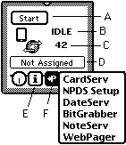

|
Package |
Function |
Required |
|
NoteServ |
Makes the Notepad Available on the WWW |
YES |
|
DateServ |
Makes your Calendar Available on the WWW |
RECOMMENDED |
|
CardServ |
Makes your Names File Available on the WWW |
RECOMMENDED |
|
Tracker Client |
Enables you to sign on to a Tracker when online |
OPTIONAL |
|
Web*Pager |
Recieve Instant messages from Visitors to your Newton (urlCop is required with Web*Pager) |
RECOMMENDED |
|
NPDS Setup |
Configuration options for the NPDS Suite |
YES |
|
Script Editor |
Write and edit custom Server-Side Scripts for NPDS |
OPTIONAL |
|
GIFServer |
Serve Screenshots off of your Newton |
OPTIONAL |
|
GIFMaker |
Extension needed for GIFServer |
OPTIONAL |
|
urlCop |
Extension needed for Web*Pager to reply to Web*Pages |
YES* |
|
Scripts |
Example embedded NPDS Scripts for your pages |
OPTIONAL |
Starting Up
When the connection is established, your server's IP address will show up in the area marked "Not Assigned" in the illustration on the right (D). The status indicator (B) will change from "IDLE" to "INIT", pause while the other parts of the server start up, then proceed to "RDY". You'll also notice the Start button has been replaced by a Stop button.
Shutting Down
To shut down your server, tap the Stop button (A). A slip will come up telling yout that the server is disconnecting.If it doesn't go away in 30 seconds, then the connection actually has been dropped: the operating system just forgot to tell the slip about it (Bug Alert) You may go ahead and close the slip by tapping its close-box.
Hit Counter (C): Offers a display of the total number of files served since the last install of nHTTPd.Info Button (E): Under this button you can find the Cache Manager, as well as the Standard "About", "Help", and "Prefs" entries.
Plugin Menu (F): Pop-up access to the Prefs/Application screen of all installed Plugins. When it is first tapped, there will be a short delay while the names of all plugins are collected. Don't Panic.
Notify Star: (Not shown in screenshot) Tap the star and nHTTPd will minimize to a small blinking star at the top of your Newton screen.
Recent Hosts: If Access Logging and DNS Lookup are turned on, tapping the Status Indicator (B) will give you a popup list of the last ten unique clients to visit your server since you started it up.
OK. So things didn't work out and you want this thing off of your Newton. Let me tell you how to make sure ALL the data from the NPDS installation is gone.
*Standalone Software: http://www.standalone.com/